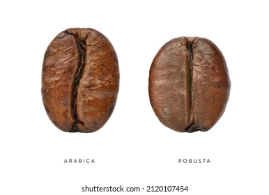
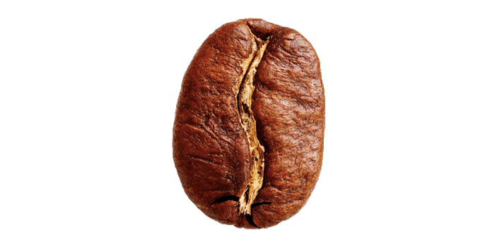
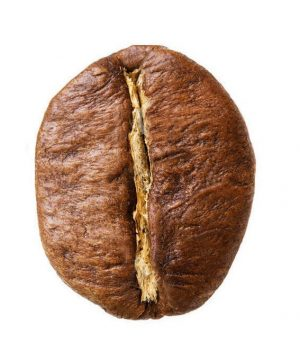

Tipos de grano de café.

La arábica y la robusta
son los dos tipos de grano de café que resaltan y tienen acceso a diferentes mercados. Cada una con sus características y particularidades.Características de los tipos de grano de café.
El grano arábico:
se destaca por ser más aromático y tener una acidez particular que es característico de este tipo de grano de café por encontrarse a mayor altura, entre 1000 y 2000 m. Uno de los arábicos más exclusivos y costosos del mundo es el BLUE MONTAIN, que crece en altura en la isla de Jamaica. Los cafetos (arbusto que produce el café) de arábica son más susceptibles al clima y a las enfermedades, por este motivo son más altos los costos de producción y cosecha.